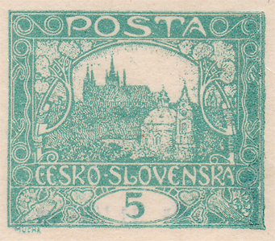
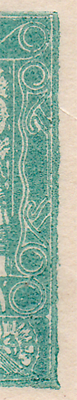
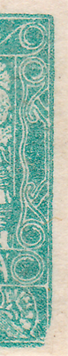
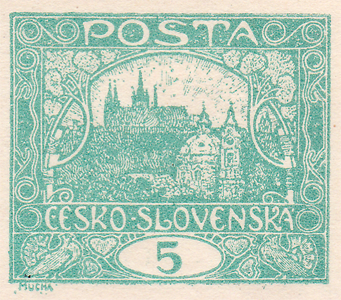
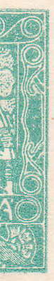
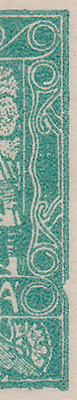
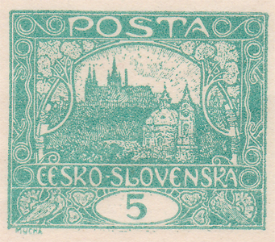
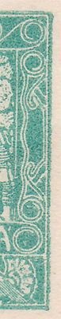
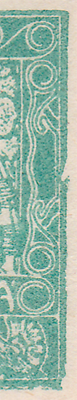
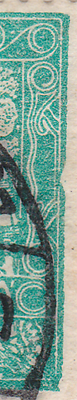

5h modrozelená – retuš na 100/I a (ne)monografická vada na 90/II a 100/II
5h modrozelená (Pof. č. 4) je velmi zajímavá hodnota. Vytisklo se necelých 119 milionů známek, což je nejvíce z celé emise Hradčany. Pro takové množství bylo potřeba zhotovit 8 tiskových desek (také nejvíce ze všech hodnot emise). 5h hodnota, na rozdíl od 15h nebo 25h, obsahuje jen několik známkových polí spirálového nebo příčkového typu. Velkou variabilitu ale představuje kombinace 8 tiskových desek, 3 katalogových odstínů a vedle nezoubkované varianty také 6 úředně použitých druhů perforace.
V rámci studia a rekonstrukce první a druhé tiskové desky jsem narazil na velmi zajímavé odchylky u 100. známkového pole z první a druhé tiskové desky a také u 90. známkového pole na druhé tiskové desce.
100/I
Na tomto známkovém poli z první tiskové desky došlo v průběhu tisku k retuši – úpravě celého pravého okraje kresby. Původní, neúměrně ke zbytku kresby robustní okraj, byl zbroušen. Tato úprava se ale úplně nepovedla – pravý dolní roh byl zbroušen podstatně více a na kresbě je jasně viditelné jeho poškození.
Z monografie víme, že první a druhá tisková deska se použila pro známky nezoubkované, hřebenové zoubkování 13¾ : 13½ (A) a řádková zoubkování 11½ (D) a 11½ : 10¾ (E). Z důvodu nedostatku materiálu nejsem schopen doložit výskyt variant u zoubkování D. V tabulce níže lze vidět, že u zoubkování E se vyskytuje jen původní neupravená varianta kresby.
| varianta 1 silný okraj | varianta 2 zbroušený okraj | |
|---|---|---|
| nezoubkovaná | ✔ | ✔ |
| A | ✔ | ✔ |
| E | ✔ | — |
Z praxe mohu konstatovat, že výskyt známek po úpravě (varianta 2), tedy se zbroušeným okrajem, je v nezoubkovaném provedení podstatně nižší než před úpravou (varianta 1). V případě zoubkování A je to naopak.



varianta 1 · varianta 2
90 a 100/II
Pokud se orientujete v monografických deskových vadách – vadách negativu, které vyjmenoval Dr. Kubát v Monografii československých známek (1968) – víte, že se na těchto polích uvádí vada „pravý rám dole vyštípnutý“ resp. „pravý rám uprostřed vyštípnutý“.
Mohu konstatovat, že obě vady nejsou vadami negativu. Vyskytují se totiž známky obou známkových polí bez poškození. Obě vyštípnutí byla tedy způsobena nesprávnou manipulací s tiskovou deskou během tisku. Výskyt obou typů v různých zoubkováních ukazuje tabulka; zatím se mi nepodařilo dohledat variantu 1 v zoubkování A.
| varianta 1 nepoškozený okraj | varianta 2 poškozený okraj | |
|---|---|---|
| nezoubkovaná | ✔ | ✔ |
| A | — | ✔ |
| E | ✔ | — |
U známkového pole 90/II jsem zjistil dvě varianty: nepoškozený a poškozený okraj:



varianta 1 · varianta 2
V případě známkového pole 100/II se vyskytuje kresba bez poškození (varianta 1) a s poškozením, které se dále vyvíjí (varianty 2a a 2b) – je vidět odlomení spodního okraje vrypu do rámu kresby:




varianta 1 · varianta 2a · varianta 2b
V rámci jednoho archu se pochopitelně vyskytuje buď jen varianta 1 známkových polí 90 a 100, nebo jen varianta 2. Četnost výskytu obou typů se snažím mapovat.
Na závěr teorie: obě tabulky ukazují, že v případě zoubkování E se vyskytuje vždy jen jedna varianta. Usuzuji z toho, že se retuš na první tiskové desce a poškození na druhé desce mohly udát ve shodnou dobu – během procesu čištění desek. Stoprocentně se ale tato teorie potvrdit nedá.
5h blue-green – retouch at 100/I and the (non-)Monograph flaw at 90/II and 100/II
The 5h blue-green (Pof. no. 4) is a very interesting value. Almost 119 million stamps were printed – the most of the whole Hradčany issue – requiring 8 printing plates (again the most of all values). Unlike the 15h or 25h, the 5h has only a few fields of the spiral or crossbar types, but great variability comes from the combination of 8 plates, 3 catalogued shades and, besides the imperforate form, 6 officially used perforations.
While studying and reconstructing the first and second plates I came across very interesting deviations at field 100 of both plates and at field 90 of the second plate.
100/I
During printing, this field of the first plate was retouched – the whole right edge of the design was reworked. The original edge, disproportionately robust, was ground down. The correction was not entirely successful: the lower right corner was ground considerably more, and its damage is clearly visible in the design.
From the Monograph we know that plates I and II were used for imperforate stamps, comb perforation 13¾ : 13½ (A) and line perforations 11½ (D) and 11½ : 10¾ (E). For lack of material I cannot document the variants in perforation D. The table below shows that in perforation E only the original, unmodified design occurs.
| variant 1 strong edge | variant 2 ground-down edge | |
|---|---|---|
| imperforate | ✔ | ✔ |
| A | ✔ | ✔ |
| E | ✔ | — |
In practice, stamps after the correction (variant 2, with the ground edge) are considerably scarcer imperforate than before the correction (variant 1); in perforation A it is the other way round.
variant 1 · variant 2
90 and 100/II
If you know the Monograph plate flaws – negative flaws listed by Dr. Kubát in his 1968 Monograph of Czechoslovak Stamps – you will know these fields are listed with the flaws “right frame chipped at bottom” and “right frame chipped in the middle”.
I can state that neither flaw is a negative flaw: stamps of both fields exist without the damage. Both chips were therefore caused by improper handling of the plate during printing. The occurrence of both states in the various perforations is shown in the table; so far I have not found variant 1 in perforation A.
| variant 1 undamaged edge | variant 2 damaged edge | |
|---|---|---|
| imperforate | ✔ | ✔ |
| A | — | ✔ |
| E | ✔ | — |
At field 90/II I found two states – undamaged and damaged edge:
variant 1 · variant 2
At field 100/II the design occurs undamaged (variant 1) and with progressively developing damage (variants 2a and 2b) – the breaking-off of the lower edge of the cut into the frame is visible:
variant 1 · variant 2a · variant 2b
Naturally, within one sheet either only variant 1 of fields 90 and 100 occurs, or only variant 2. I am still mapping the frequency of both states.
A closing theory: both tables show that in perforation E only one state ever occurs. I conclude that the retouch on plate I and the damage on plate II may have happened at the same time – during plate cleaning. This theory, however, cannot be proven with certainty.